# 综合问题
# JS
- 解释一下原型链
instanceof原理apply和call的作用及区别- 说下你对
DOM树的理解 - 实现
add(1)(2)(3) - es5实现继承
- 说下generator原理
- 实现一个promise
- 说下事件模型
- bind的实现
- 闭包的作用和原理
- 0.1+0.2为什么不等于0.3
- 前端模块化机制有哪些
- 谈谈变量提升
- new操作符具体做了什么
- 谈下事件循环机制
- 谈谈你对作用域的理解
- v8垃圾回收机制
- 合并二维有序数组成一维有序数组
- 实现一个trim方法
- 什么场景下会用策略模式
- 判断括号字符串是否有效
- 判断链表是否有环
- 爬楼梯问题
- 实现一个发布订阅模式
- 实现一个斐波那契数列
# CSS
- CSS选择器有哪些
- 什么是BFC，BFC有什么作用，如何形成BFC
position有哪些值，作用分别是什么- flex布局有什么好处
- 介绍下盒子模型
- 有哪些方式可以使div居中
- css优先级是怎么计算的
- CSS相关的性能优化
- 双飞冀/圣杯布局
- 浮动元素会造成什么影响，如何清除浮动
- CSS样式隔离手段
- 行内元素、块级元素有哪些，区别是什么
- CSS3有哪些新特性
- 层叠上下文是什么
- 重排和重绘是什么，有什么区别
- 动画性能如何优化
# react
- react16新增了哪些生命周期、有什么作用，为什么去掉某些15的生命周期
react setState是同步还是异步- 什么是高阶组件，请举例说明
- react合成事件是什么，和原生事件的区别
- 为什么有时react两次
setState，只执行一次 - redux有哪些原则
- redux和redux-saga的区别和原理
- react如何处理异常
- react为什么需要fiber
- redux中间件机制
- redux compose函数做什么的
- redux-saga是什么，和redux-thunk有什么区别
- redux的理念(说了下action dispatch state啥的，单向数据流)
- react-redux中connect怎么实现(高阶组件、context注入store、subscribe订阅store数据变化)
- mixin hoc 继承的区别，优缺点
- useEffect的实现原理
- 异步渲染和旧版的diff的区别
- react diff如何实现
- react 旧版的diff用深度优先还是广度优先。为什么用深度优先，广度优先能实现吗
- diff的时间复杂度？为什么？(o(n)。提了下react优化o(n3)->o(n))
react fiber有哪些优点，怎样做到的？如何实现异步渲染（链表/可中断）- react有哪些性能优化的点
- setState和hook的区别
- react-router实现原理(hash/html5 history)
- 客户端路由hash/history实现的区别、原理
- 实现一个useState
# Vue
- vue的数据绑定机制是如何实现的
vue next tick实现原理- vue的
computed和watch的区别 - 说下vue的
keep alive - vue/react技术选型
# 工程化
- 是否有写过webpack插件
- webpack工作流程是怎样的
- 谈下webpack loader机制
- node模块机制是怎样的
- node require具体实现是什么
- node事件循环与浏览器的哪些不一样
- node的异常处理方式
- tree shaking是什么，有什么作用，原理是什么
- babel是什么，怎么做到的
- babel实现转码的过程（词法/语法分析）
- 项目的技术栈怎么选型
# HTTP
- 常用的http状态码(101 200 204 301 302 304 307 400 404 500...)
http 302 301 307之间的区别- 301和302对于seo来说哪个更好 (301)
https加密过程是怎样的http2.0做了哪些改进- TCP3次握手过程
http2.0有哪些不足，http3.0是什么- tcp滑动窗口是什么
- websocket建立过程
- tcp重试机制
- https的握手过程是怎样的
- 简单请求和复杂请求的区别
# 浏览器
- 聊下你知道的浏览器架构
- 浏览器缓存策略是怎样的
- 描述下浏览器从输入网址到页面展现的整个过程
- history和hash两种路由方式的最大区别是什么？
- 你知道的前端性能优化手段有哪些
- 网站首页有大量的图片，加载很慢，如何去优化呢？
- 如何减少白屏的时间
- 如何定位内存泄露
- 跨域是什么、如何解决
- jsonp有什么缺点
# 综合
- Mutation Observer、Intersection Observer使用场景（Intersection听过没用过）
- decorator的作用，编译后是怎样的(@decorator -> decorator(target)...)
- symbol是什么，一般用来做什么
- 小程序底层实现原理了解多少（说了下双线程模型/预加载webview）
- websocket/轮询的好处和缺点 （性能、兼容性）
- websocket的握手过程（urgrade websocket）
- tcp的握手过程
- tcp/udp的区别
# 模拟题
# 15道运行题
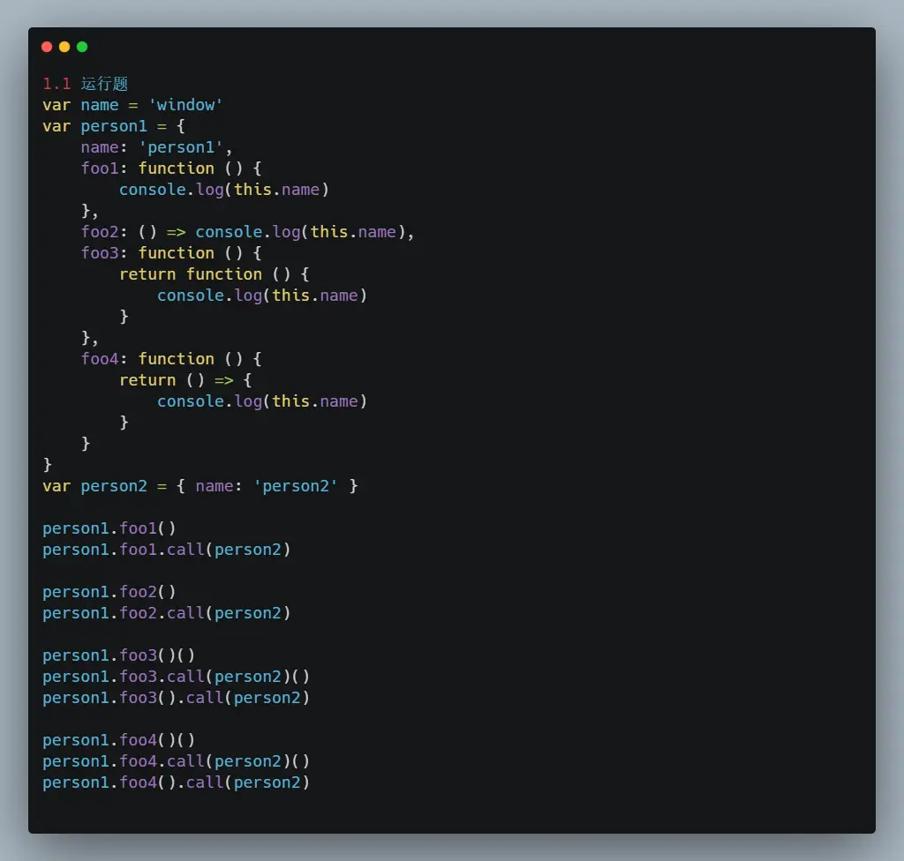 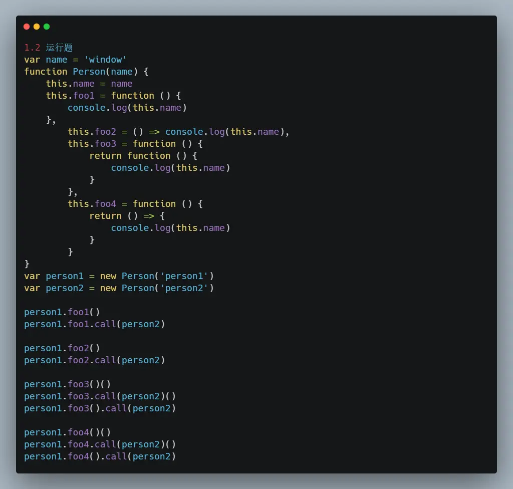 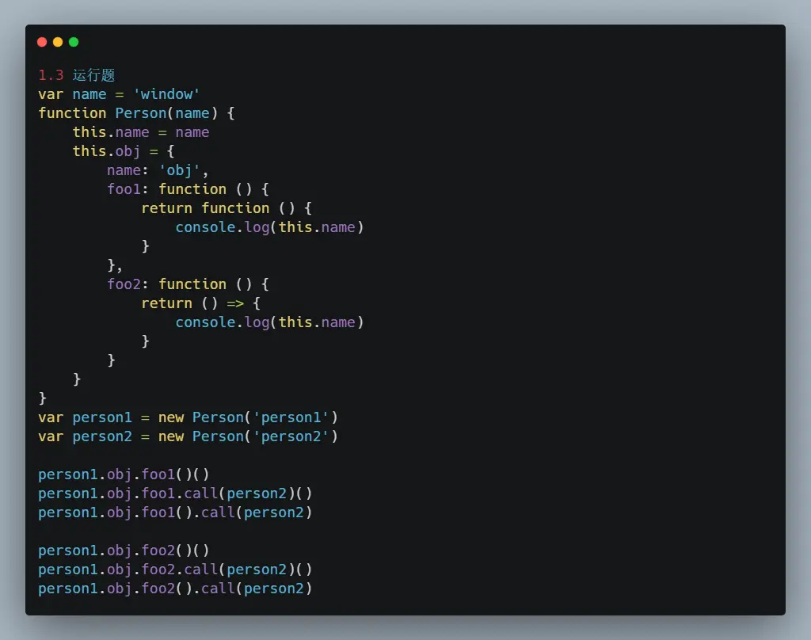 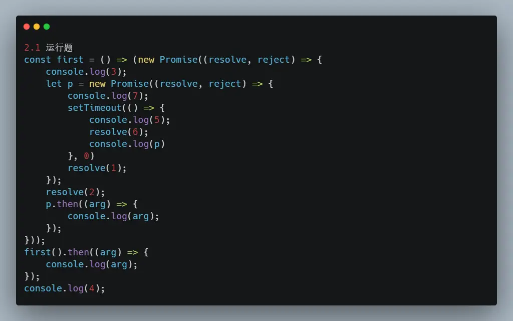 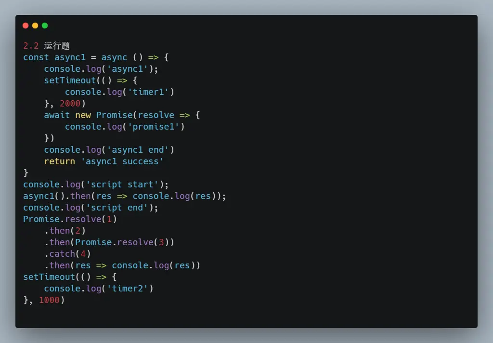 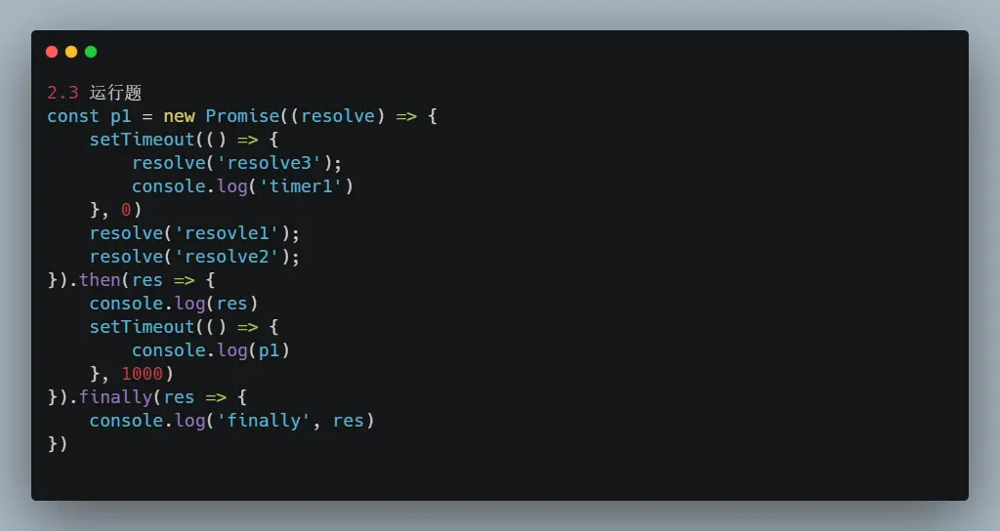 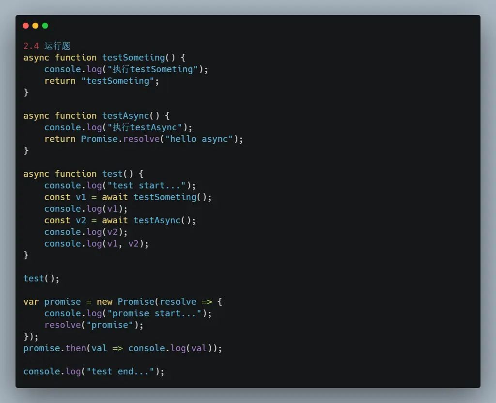 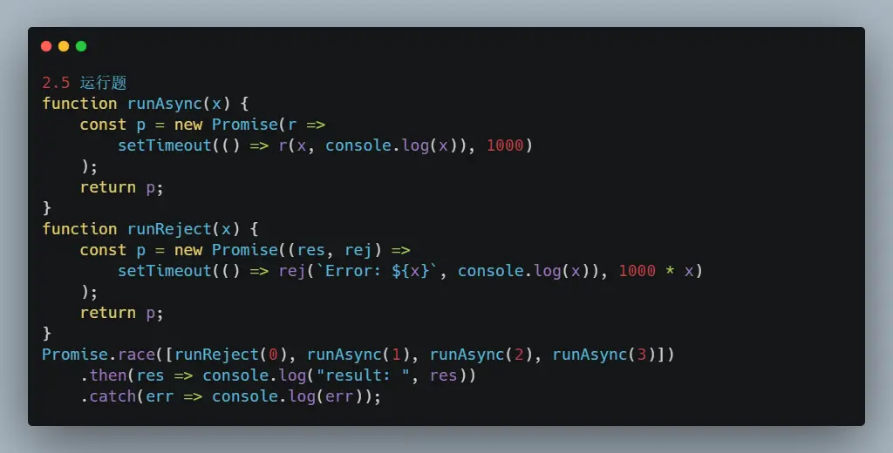 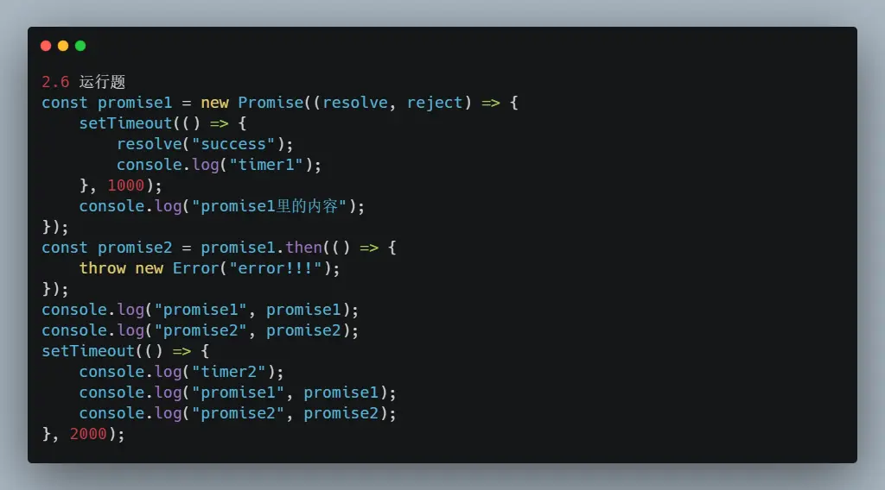 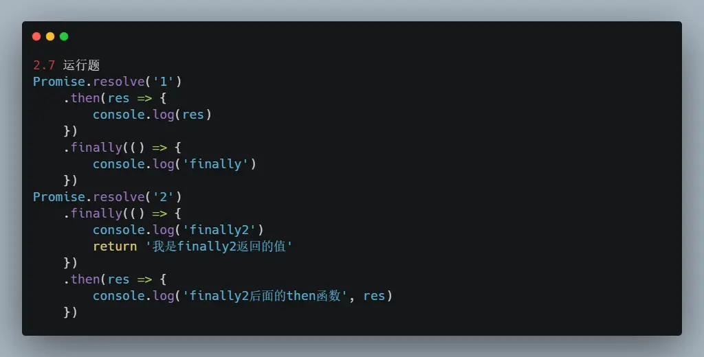 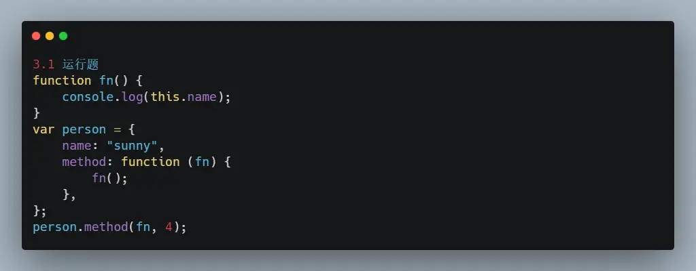 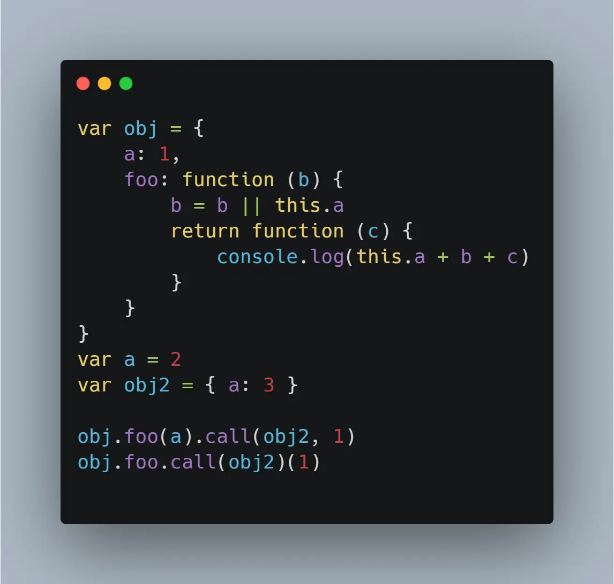 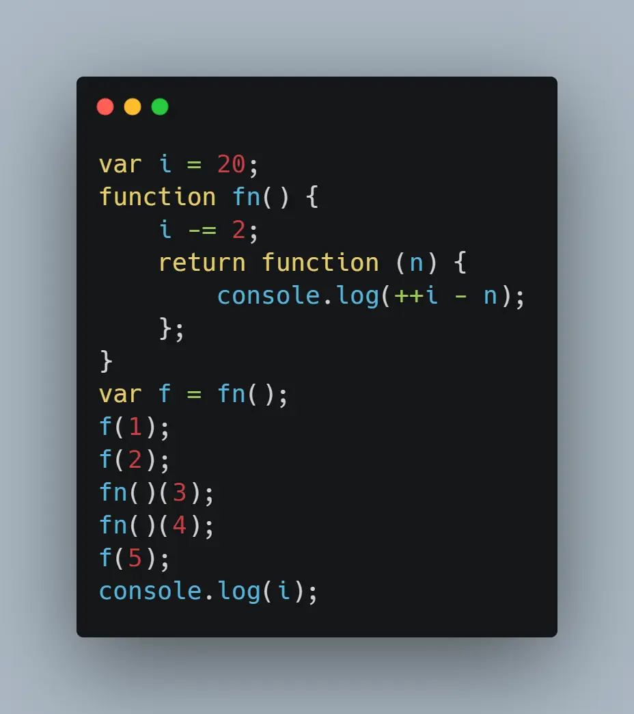 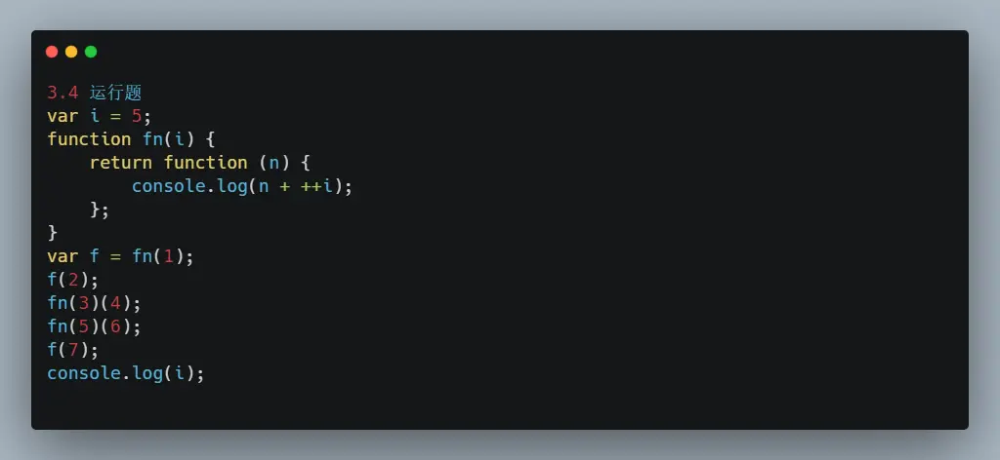 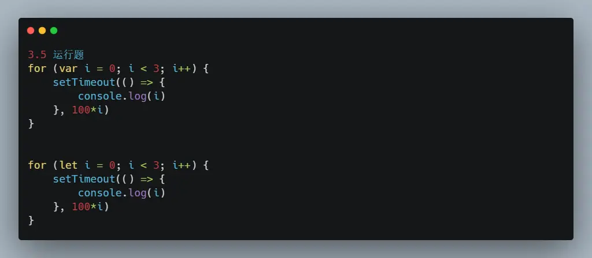
# 20道简答题
JavaScript 创建对象的几种方式?
JavaScript 继承的几种实现方式?
说一下对this的理解。
4.什么是Proxy?
事件委托是什么?
说一下你所理解的闭包
说一下你所理解的ajax，如何创建一个ajax?
说一下你所理解的同源政策?
你是如何解决的跨域问题的?
你所理解的JavaScript的事件循环机制是什么?
说一下对Object.defineProperty()的理解。
说一下图片的懒加载和预加载的理解。
请求服务器数据，get和post请求的区别是什么?
Reflect对象创建的目的是什么?
require 模块引入的查找方式?
16 . 观察者模式和发布订阅模式有什么不同?
检查数据类型的方法会几种，分别是什么?
谈谈对JSON的了解。
进行哪些操作会造成内存泄漏?
谈谈你所理解的函数式编程。
# 15道手写题
实现js的节流和防抖函数，两者的区别是什么?
实现js中的深拷贝
手写call函数
手写apply函数
手写bind函数
实现柯里化函数
手写一个观察者模式
手动实现EventEmitter(发布订阅模式)
手动实现jsonp
手动实现new关键字
手动实现
Object.assign实现解析url参数为对象的函数
js格式化数字(每三位加逗号)
手写
instanceof关键字手写数组去重的方法?
← 设计模式